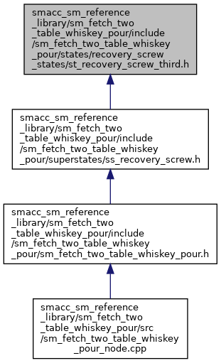

SMACC
smacc_sm_reference_library
sm_fetch_two_table_whiskey_pour
include
sm_fetch_two_table_whiskey_pour
states
recovery_screw_states
Classes
|
Namespaces
st_recovery_screw_third.h File Reference
This graph shows which files directly or indirectly include this file:

Go to the source code of this file.
Classes
struct
sm_fetch_two_table_whiskey_pour::recovery_screw::StRecoveryScrewThird
Namespaces
sm_fetch_two_table_whiskey_pour
sm_fetch_two_table_whiskey_pour::recovery_screw
Generated by
1.8.17
 1.8.17
1.8.17